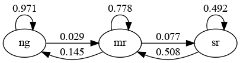
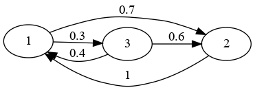

41. 网络#
!pip install quantecon quantecon-book-networks wbgapi
Show output
Requirement already satisfied: quantecon in /home/runner/miniconda3/envs/quantecon/lib/python3.12/site-packages (0.8.0)
Requirement already satisfied: quantecon-book-networks in /home/runner/miniconda3/envs/quantecon/lib/python3.12/site-packages (1.3.1)
Requirement already satisfied: wbgapi in /home/runner/miniconda3/envs/quantecon/lib/python3.12/site-packages (1.0.12)
Requirement already satisfied: numba>=0.49.0 in /home/runner/miniconda3/envs/quantecon/lib/python3.12/site-packages (from quantecon) (0.60.0)
Requirement already satisfied: numpy>=1.17.0 in /home/runner/miniconda3/envs/quantecon/lib/python3.12/site-packages (from quantecon) (1.26.4)
Requirement already satisfied: requests in /home/runner/miniconda3/envs/quantecon/lib/python3.12/site-packages (from quantecon) (2.32.3)
Requirement already satisfied: scipy>=1.5.0 in /home/runner/miniconda3/envs/quantecon/lib/python3.12/site-packages (from quantecon) (1.13.1)
Requirement already satisfied: sympy in /home/runner/miniconda3/envs/quantecon/lib/python3.12/site-packages (from quantecon) (1.13.2)
Requirement already satisfied: pandas in /home/runner/miniconda3/envs/quantecon/lib/python3.12/site-packages (from quantecon-book-networks) (2.2.2)
Requirement already satisfied: matplotlib in /home/runner/miniconda3/envs/quantecon/lib/python3.12/site-packages (from quantecon-book-networks) (3.9.2)
Requirement already satisfied: pandas-datareader in /home/runner/miniconda3/envs/quantecon/lib/python3.12/site-packages (from quantecon-book-networks) (0.10.0)
Requirement already satisfied: networkx in /home/runner/miniconda3/envs/quantecon/lib/python3.12/site-packages (from quantecon-book-networks) (3.3)
Requirement already satisfied: PyYAML in /home/runner/miniconda3/envs/quantecon/lib/python3.12/site-packages (from wbgapi) (6.0.1)
Requirement already satisfied: tabulate in /home/runner/miniconda3/envs/quantecon/lib/python3.12/site-packages (from wbgapi) (0.9.0)
Requirement already satisfied: llvmlite<0.44,>=0.43.0dev0 in /home/runner/miniconda3/envs/quantecon/lib/python3.12/site-packages (from numba>=0.49.0->quantecon) (0.43.0)
Requirement already satisfied: contourpy>=1.0.1 in /home/runner/miniconda3/envs/quantecon/lib/python3.12/site-packages (from matplotlib->quantecon-book-networks) (1.2.0)
Requirement already satisfied: cycler>=0.10 in /home/runner/miniconda3/envs/quantecon/lib/python3.12/site-packages (from matplotlib->quantecon-book-networks) (0.11.0)
Requirement already satisfied: fonttools>=4.22.0 in /home/runner/miniconda3/envs/quantecon/lib/python3.12/site-packages (from matplotlib->quantecon-book-networks) (4.51.0)
Requirement already satisfied: kiwisolver>=1.3.1 in /home/runner/miniconda3/envs/quantecon/lib/python3.12/site-packages (from matplotlib->quantecon-book-networks) (1.4.4)
Requirement already satisfied: packaging>=20.0 in /home/runner/miniconda3/envs/quantecon/lib/python3.12/site-packages (from matplotlib->quantecon-book-networks) (24.1)
Requirement already satisfied: pillow>=8 in /home/runner/miniconda3/envs/quantecon/lib/python3.12/site-packages (from matplotlib->quantecon-book-networks) (10.4.0)
Requirement already satisfied: pyparsing>=2.3.1 in /home/runner/miniconda3/envs/quantecon/lib/python3.12/site-packages (from matplotlib->quantecon-book-networks) (3.1.2)
Requirement already satisfied: python-dateutil>=2.7 in /home/runner/miniconda3/envs/quantecon/lib/python3.12/site-packages (from matplotlib->quantecon-book-networks) (2.9.0.post0)
Requirement already satisfied: pytz>=2020.1 in /home/runner/miniconda3/envs/quantecon/lib/python3.12/site-packages (from pandas->quantecon-book-networks) (2024.1)
Requirement already satisfied: tzdata>=2022.7 in /home/runner/miniconda3/envs/quantecon/lib/python3.12/site-packages (from pandas->quantecon-book-networks) (2023.3)
Requirement already satisfied: lxml in /home/runner/miniconda3/envs/quantecon/lib/python3.12/site-packages (from pandas-datareader->quantecon-book-networks) (5.2.1)
Requirement already satisfied: charset-normalizer<4,>=2 in /home/runner/miniconda3/envs/quantecon/lib/python3.12/site-packages (from requests->quantecon) (3.3.2)
Requirement already satisfied: idna<4,>=2.5 in /home/runner/miniconda3/envs/quantecon/lib/python3.12/site-packages (from requests->quantecon) (3.7)
Requirement already satisfied: urllib3<3,>=1.21.1 in /home/runner/miniconda3/envs/quantecon/lib/python3.12/site-packages (from requests->quantecon) (2.2.3)
Requirement already satisfied: certifi>=2017.4.17 in /home/runner/miniconda3/envs/quantecon/lib/python3.12/site-packages (from requests->quantecon) (2024.8.30)
Requirement already satisfied: mpmath<1.4,>=1.1.0 in /home/runner/miniconda3/envs/quantecon/lib/python3.12/site-packages (from sympy->quantecon) (1.3.0)
Requirement already satisfied: six>=1.5 in /home/runner/miniconda3/envs/quantecon/lib/python3.12/site-packages (from python-dateutil>=2.7->matplotlib->quantecon-book-networks) (1.16.0)
41.1. 概述#
近年来，网络科学领域迅速发展，成为研究复杂系统中对象间关系的重要方法。
网络科学关注的是实体之间的连接和互动方式。
万维网是一个典型例子，其中网页通过超链接形成庞大的信息网络，使信息能够高效传播和获取。
人脑是自然界中最复杂的网络之一，神经元之间的连接构成了复杂的神经回路，支持着我们的思考、记忆和行为。
人工神经网络正是受到大脑结构的启发，通过在简单计算单元之间建立连接，实现复杂的模式识别和决策功能。
流行病学家在研究COVID-19等疾病传播时，分析人群接触网络对理解疫情扩散路径和制定防控策略至关重要。
在运筹学领域，网络分析被广泛应用于解决最小成本流、旅行商问题、最短路径和资源分配等实际问题。
本讲座将重点介绍经济和金融网络，探讨网络结构如何影响经济活动和金融稳定性。
内容部分参考了《经济网络》教材，但我们将以更基础的方式进行讲解，适合初学者理解。
我们需要以下导入。
import numpy as np
import networkx as nx
import matplotlib.pyplot as plt
import pandas as pd
import quantecon as qe
import matplotlib.cm as cm
import quantecon_book_networks.input_output as qbn_io
import quantecon_book_networks.data as qbn_data
import matplotlib.patches as mpatches
import matplotlib as mpl
FONTPATH = "fonts/SourceHanSerifSC-SemiBold.otf"
mpl.font_manager.fontManager.addfont(FONTPATH)
plt.rcParams['font.family'] = ['Source Han Serif SC']
41.2. 经济和金融网络#
经济学中的网络应用广泛，主要包括以下几类：
金融网络
生产网络
贸易网络
运输网络
社交网络
社交网络在塑造市场情绪和影响消费者决策方面发挥着重要作用。
金融网络的结构能够揭示金融系统中潜在的脆弱点和系统性风险。
生产网络则决定了贸易模式、创新传播途径以及局部经济冲击如何在整个经济体系中扩散。
为了更直观地理解这些网络的特性和影响，下面我们通过一些具体例子来进行说明。
41.2.1. 例子：飞机出口网络#
以下图表展示了2019年全球大型商用飞机的国际贸易网络，数据来源于国际贸易数据SITC第2修订版。
Show source
ch1_data = qbn_data.introduction()
export_figures = False
DG = ch1_data['aircraft_network']
pos = ch1_data['aircraft_network_pos']
centrality = nx.eigenvector_centrality(DG)
node_total_exports = qbn_io.node_total_exports(DG)
edge_weights = qbn_io.edge_weights(DG)
node_pos_dict = pos
node_sizes = qbn_io.normalise_weights(node_total_exports,10000)
edge_widths = qbn_io.normalise_weights(edge_weights,10)
node_colors = qbn_io.colorise_weights(list(centrality.values()),color_palette=cm.viridis)
node_to_color = dict(zip(DG.nodes,node_colors))
edge_colors = []
for src,_ in DG.edges:
edge_colors.append(node_to_color[src])
fig, ax = plt.subplots(figsize=(10, 10))
ax.axis('off')
nx.draw_networkx_nodes(DG,
node_pos_dict,
node_color=node_colors,
node_size=node_sizes,
linewidths=2,
alpha=0.6,
ax=ax)
nx.draw_networkx_labels(DG,
node_pos_dict,
ax=ax)
nx.draw_networkx_edges(DG,
node_pos_dict,
edge_color=edge_colors,
width=edge_widths,
arrows=True,
arrowsize=20,
ax=ax,
arrowstyle='->',
node_size=node_sizes,
connectionstyle='arc3,rad=0.15')
plt.show()
{kind=link}
在这个网络图中，圆圈表示节点或顶点，它们代表不同的国家。
连接各国的箭头称为边或链接，表示贸易关系。
节点的大小反映了该国的总出口量，而边的宽度则表示向目标国家的出口规模。
（图表数据基于重量在15,000公斤以上的商用飞机贸易，数据来源为CID Dataverse。）
从图中可以清楚地看出，美国、法国和德国是全球飞机贸易的主要出口中心。
接下来，我们将探讨如何用数学方法来量化网络中的这些特性。
41.2.2. 例子：马尔可夫链#
在我们之前学习的马尔可夫链讲座中，我们分析了一个商业周期模型，其中包含三种经济状态：
“ng”：表示”正常增长”阶段
“mr”：表示”轻度衰退”阶段
“sr”：表示”严重衰退”阶段
下面这个网络图展示了这些状态之间的关系：
这是一个网络的例子，其中节点集 \(V\) 等于状态集：
节点之间的边表示一个月的转移概率。
41.3. 图论简介#
看完这些例子后，让我们深入一些理论基础。
这些理论框架将帮助我们更系统地分析网络结构。
网络科学的理论基础主要来自数学中的图论。
虽然图论可以非常复杂，但我们只需要掌握一些基本概念。
即使是这些基础知识，也足以让我们探讨经济和金融网络中的许多有趣且重要的现象。
在本讲座中，我们主要关注”有向”图，这类图中的连接是不对称的（箭头通常只从一个节点指向另一个节点，而不一定有返回的箭头）。
例如，
银行 \(A\) 向银行 \(B\) 贷款
公司 \(A\) 向公司 \(B\) 供应商品
个人 \(A\) 在特定社交网络上”关注”个人 \(B\)
（”无向”图，即连接是对称的，是有向图的一种特殊情况——我们只需要保证每个从 \(A\) 指向 \(B\) 的箭头都配对一个从 \(B\) 指向 \(A\) 的箭头。）
41.3.1. 关键定义#
一个有向图由两个基本元素构成：
一个有限节点集 \(V\) 和
一组有序对 \((u, v)\)，其中 \(u, v \in V\)
\(V\) 中的元素称为图的顶点或节点。
有序对 \((u,v)\) 称为图的边，所有边的集合通常记为 \(E\)。
从直观上看，边 \((u,v)\) 表示从节点 \(u\) 指向节点 \(v\) 的一个箭头。
（这种表示方法很自然，因为箭头完全由其起点和终点确定。）
以 Fig. 41.1 中的飞机出口网络为例：
\(V\) 包含数据集中的所有国家。
\(E\) 包含网络中的所有连接，每个连接代表一个国家向另一个国家出口飞机的贸易关系。
下面我们再看一些其它的例子。
下面显示了两个图，每个图都有三个节点。
Fig. 41.2 贫困陷阱#
现在，我们构造一个具有相同节点但具有不同边的图。
Fig. 41.3 贫困陷阱#
在这些图中，箭头（边）可以理解为表示在给定时间单位内从一个状态转移到另一个状态的概率。
一般来说，当存在边 \((u, v)\) 时，我们称节点 \(u\) 是 \(v\) 的直接前驱，而节点 \(v\) 是 \(u\) 的直接后继。
对于任意节点 \(v \in V\)，我们定义：
入度 \(i_d(v)\) 是指向节点 \(v\) 的边数，即 \(v\) 的直接前驱数量
出度 \(o_d(v)\) 是从节点 \(v\) 出发的边数，即 \(v\) 的直接后继数量
41.3.2. Networkx中的有向图#
Python包 Networkx 为表示有向图提供了一个便捷的数据结构，并实现了许多用于分析它们的常见例程。
作为示例，让我们使用Networkx重新创建 Fig. 41.3。
为此，我们首先创建一个空的 DiGraph 对象：
G_p = nx.DiGraph()
接下来，我们用节点和边来填充它。
为此，我们列出所有边的列表，其中贫穷用p表示，以此类推：
edge_list = [('p', 'p'),
('m', 'p'), ('m', 'm'), ('m', 'r'),
('r', 'p'), ('r', 'm'), ('r', 'r')]
最后，我们将边添加到我们的 DiGraph 对象中：
for e in edge_list:
u, v = e
G_p.add_edge(u, v)
或者，我们可以使用 add_edges_from 方法。
G_p.add_edges_from(edge_list)
添加边会自动添加节点，所以 G_p 现在是我们图的正确表示。
我们可以用以下代码通过Networkx绘制图来验证这一点：
fig, ax = plt.subplots()
nx.draw_spring(G_p, ax=ax, node_size=500, with_labels=True,
font_weight='bold', arrows=True, alpha=0.8,
connectionstyle='arc3,rad=0.25', arrowsize=20)
plt.show()
{kind=link}
上面得到的图形与Fig. 41.3中的原始有向图相匹配。
DiGraph对象有计算节点入度和出度的方法。
例如，
G_p.in_degree('p')
3
41.3.3. 连通性#
接下来，我们研究网络中的连通性概念，这对理解经济网络的结构和影响至关重要。
当节点\(u\)和\(v\)相同，或者存在一条从\(u\)到\(v\)的路径（一系列相连的边）时，我们说节点\(v\)从节点\(u\)可达。
这种关系记为\(u \to v\) （直观地说，这表示有一条或多条箭头从\(u\)指向\(v\)。）
举个例子，考虑一个表示生产网络的有向图：
节点集\(V\)中的元素代表不同的工业部门
如果存在边\((i, j)\)，表示部门\(i\)为部门\(j\)提供产品或服务
在这种情况下，\(m \to \ell\)意味着部门\(m\)是部门\(\ell\)的上游供应商。
当\(u \to v\)且\(v \to u\)同时成立时，我们说节点\(u\)和\(v\)是相互可达的或相通的。
如果图中的任意两个节点都是相互可达的，我们称这个图是强连通的。
比较我们之前的例子：Fig. 41.2是强连通的，因为任意两个节点之间都存在路径； 而在Fig. 41.3中，由于富人节点无法从穷人节点到达，所以它不是强连通的。
我们可以使用NetworkX库来验证这一点，通过构建图并调用nx.is_strongly_connected函数：
fig, ax = plt.subplots()
G1 = nx.DiGraph()
G1.add_edges_from([('p', 'p'),('p','m'),('p','r'),
('m', 'p'), ('m', 'm'), ('m', 'r'),
('r', 'p'), ('r', 'm'), ('r', 'r')])
nx.draw_networkx(G1, with_labels = True)
{kind=link}
nx.is_strongly_connected(G1) #检查上面的图是否强连通
True
fig, ax = plt.subplots()
G2 = nx.DiGraph()
G2.add_edges_from([('p', 'p'),
('m', 'p'), ('m', 'm'), ('m', 'r'),
('r', 'p'), ('r', 'm'), ('r', 'r')])
nx.draw_networkx(G2, with_labels = True)

nx.is_strongly_connected(G2) #检查上面的图是否强连通
False
41.4. 加权图#
41.5. 加权图#
在加权图中，每条边都被赋予一个数值权重，表示连接强度或其他量化特征。
41.5.1. 国际私人信贷流动网络#
下图展示了一个加权图的实例：国家间私人银行的资金流动（贷款）网络。边的粗细表示资金流动的规模，节点的大小反映了该国在网络中的重要性。
Show source
Z = ch1_data["adjacency_matrix"]["Z"]
Z_visual= ch1_data["adjacency_matrix"]["Z_visual"]
countries = ch1_data["adjacency_matrix"]["countries"]
G = qbn_io.adjacency_matrix_to_graph(Z_visual, countries, tol=0.03)
centrality = qbn_io.eigenvector_centrality(Z_visual, authority=False)
node_total_exports = qbn_io.node_total_exports(G)
edge_weights = qbn_io.edge_weights(G)
node_pos_dict = nx.circular_layout(G)
node_sizes = qbn_io.normalise_weights(node_total_exports,3000)
edge_widths = qbn_io.normalise_weights(edge_weights,10)
node_colors = qbn_io.colorise_weights(centrality)
node_to_color = dict(zip(G.nodes,node_colors))
edge_colors = []
for src,_ in G.edges:
edge_colors.append(node_to_color[src])
fig, ax = plt.subplots(figsize=(10, 10))
ax.axis('off')
nx.draw_networkx_nodes(G,
node_pos_dict,
node_color=node_colors,
node_size=node_sizes,
edgecolors='grey',
linewidths=2,
alpha=0.4,
ax=ax)
nx.draw_networkx_labels(G,
node_pos_dict,
font_size=12,
ax=ax)
nx.draw_networkx_edges(G,
node_pos_dict,
edge_color=edge_colors,
width=edge_widths,
arrows=True,
arrowsize=20,
alpha=0.8,
ax=ax,
arrowstyle='->',
node_size=node_sizes,
connectionstyle='arc3,rad=0.15')
plt.show()
{kind=link}
国家代码在下表中给出
代码 |
国家 |
代码 |
国家 |
代码 |
国家 |
代码 |
国家 |
|---|---|---|---|---|---|---|---|
AU |
澳大利亚 |
DE |
德国 |
CL |
智利 |
ES |
西班牙 |
PT |
葡萄牙 |
FR |
法国 |
TR |
土耳其 |
GB |
英国 |
US |
美国 |
IE |
爱尔兰 |
AT |
奥地利 |
IT |
意大利 |
BE |
比利时 |
JP |
日本 |
SW |
瑞士 |
SE |
瑞典 |
图中从日本到美国的箭头代表日本银行对美国注册银行的总债权，这些数据来自国际清算银行（BIS）的统计。
节点的大小反映了该国家从其他所有国家获得的外国债权总额——节点越大，收到的债权越多。
箭头的粗细则表示债权流动的规模——箭头越粗，债权金额越大。
值得注意的是，这个网络中几乎每对国家之间都存在债权关系，也就是说，对于大多数节点对\(u\)和\(v\)，都有一条连接它们的边\((u, v)\)。
（实际上网络中还有更多较小的债权流动，为了图表清晰我们没有全部显示。）
在这种情况下，仅仅关注边的存在与否提供的信息有限。要真正理解这个金融网络，我们不仅需要知道债权流动的存在，更需要了解这些流动的具体规模。
因此，”加权有向图”是描述这种网络结构的最合适的数据结构。
41.5.2. 定义#
加权有向图是一个有向图，其中每条边都被赋予一个正数值，称为权重。这些权重通过一个函数\(w\)来定义，该函数将每条边映射到一个相应的数值。
前面展示的国际银行债权网络就是一个加权有向图的例子，其中权重表示资金流动的规模。
下图显示了一个加权有向图，箭头表示有向图的边。
Fig. 41.5 加权贫困陷阱#
图中边旁边的数字表示各边的权重。
在这个例子中，这些权重可以解释为家庭在一年内从一种经济状态转移到另一种状态的概率。
例如，我们可以看到一个富裕家庭在一年内有10%的概率变为贫困状态。
41.6. 邻接矩阵#
表示加权有向图的另一种方式是使用邻接矩阵，这种表示方法在进行数值计算时特别有用。
假设我们有一个加权有向图，其节点集为 \(\{v_1, \ldots, v_n\}\)，边集为 \(E\)，权重函数为 \(w\)，则该图的邻接矩阵定义为
一旦 \(V\) 中的节点被列举出来，权重函数和邻接矩阵本质上提供相同的信息。
例如，将 \(\{\)贫困, 中产, 富裕\(\}\) 分别映射到 \(\{1, 2, 3\}\)， Fig. 41.5 中加权有向图对应的邻接矩阵是
在 QuantEcon 的 DiGraph 实现中，权重通过关键字 weighted 记录：
A = ((0.9, 0.1, 0.0),
(0.4, 0.4, 0.2),
(0.1, 0.1, 0.8))
A = np.array(A)
G = qe.DiGraph(A, weighted=True) # 储存权重
关于邻接矩阵的一个关键点是，对其进行转置操作会反转相关有向图中的所有箭头。
例如，以下有向图可以被解释为一个金融网络的简化版本，其中节点代表银行， 边表示资金流动。
G4 = nx.DiGraph()
G4.add_edges_from([('1','2'),
('2','1'),('2','3'),
('3','4'),
('4','2'),('4','5'),
('5','1'),('5','3'),('5','4')])
pos = nx.circular_layout(G4)
edge_labels={('1','2'): '100',
('2','1'): '50', ('2','3'): '200',
('3','4'): '100',
('4','2'): '500', ('4','5'): '50',
('5','1'): '150',('5','3'): '250', ('5','4'): '300'}
nx.draw_networkx(G4, pos, node_color = 'none',node_size = 500)
nx.draw_networkx_edge_labels(G4, pos, edge_labels=edge_labels)
nx.draw_networkx_nodes(G4, pos, linewidths= 0.5, edgecolors = 'black',
node_color = 'none',node_size = 500)
plt.show()
{kind=link}
我们看到银行2向银行3发放了200的贷款。
对应的邻接矩阵是
其转置是
相应的网络在下图中可视化，显示了贷款发放后的负债网络。
这两个网络（原始和转置）对于分析金融市场都很有用。
G5 = nx.DiGraph()
G5.add_edges_from([('1','2'),('1','5'),
('2','1'),('2','4'),
('3','2'),('3','5'),
('4','3'),('4','5'),
('5','4')])
edge_labels={('1','2'): '50', ('1','5'): '150',
('2','1'): '100', ('2','4'): '500',
('3','2'): '200', ('3','5'): '250',
('4','3'): '100', ('4','5'): '300',
('5','4'): '50'}
nx.draw_networkx(G5, pos, node_color = 'none',node_size = 500)
nx.draw_networkx_edge_labels(G5, pos, edge_labels=edge_labels)
nx.draw_networkx_nodes(G5, pos, linewidths= 0.5, edgecolors = 'black',
node_color = 'none',node_size = 500)
plt.show()
{kind=link}
任何非负的 \(n \times n\) 矩阵 \(A = (a_{ij})\) 都可以自然地表示为一个加权有向图的邻接矩阵。
具体来说，我们可以将节点集合定义为 \(V = \{1, 2, \ldots, n\}\)，并在 \(a_{ij} > 0\) 时在节点 \(i\) 和 \(j\) 之间添加一条有向边。
每条边 \((i,j)\) 的权重就是矩阵中对应的元素值 \(a_{ij}\)。
这样构造的图被称为由矩阵 \(A\) 生成的加权有向图。
41.7. 性质#
假设我们有一个加权有向图，其邻接矩阵为 \(A\)。
我们用 \(a^k_{ij}\) 表示矩阵 \(A^k\)（即 \(A\) 的 \(k\) 次幂）中第 \(i\) 行第 \(j\) 列的元素。
以下结果在图论和网络分析中应用广泛：
Theorem 41.1
对于 \(V\) 中的不同节点 \(i, j\) 和任意整数 \(k\)，我们有
当 \(k=1\) 时，这个结果很直观：如果 \(a_{ij} > 0\)，则存在从节点 \(i\) 到节点 \(j\) 的直接路径。对于一般情况的证明，可以参考 [Sargent and Stachurski, 2022]。
回顾我们在特征值讲座中学到的内容，一个非负矩阵 \(A\) 被称为不可约的，当且仅当对于任意一对索引 \((i,j)\)，都存在某个整数 \(k \geq 0\)，使得 \(a^{k}_{ij} > 0\)。
结合前面的定理，我们可以得到以下重要结论（完整证明见 [Sargent and Stachurski, 2022]）：
Theorem 41.2
对于一个加权有向图，以下陈述是等价的：
该有向图是强连通的。
该图的邻接矩阵是不可约的。
我们用一个简单的例子来说明上述定理。
考虑以下加权有向图。
我们首先将上述网络创建为 Networkx DiGraph 对象。
G6 = nx.DiGraph()
G6.add_edges_from([('1','2'),('1','3'),
('2','1'),
('3','1'),('3','2')])
然后我们构建相关的邻接矩阵A。
A = np.array([[0,0.7,0.3], # 邻接矩阵A。
[1,0,0],
[0.4,0.6,0]])
Show source
def is_irreducible(P):
n = len(P)
result = np.zeros((n, n))
for i in range(n):
result += np.linalg.matrix_power(P, i)
return np.all(result > 0)
is_irreducible(A) #检查A的不可约性
True
nx.is_strongly_connected(G6) # 检查图的连通性
True
41.8. 网络中心性#
在研究各种网络时，一个反复出现的话题是不同节点的相对”中心性”或”重要性”。
例子包括：
搜索引擎对网页的排名
确定金融网络中最重要的银行（在金融危机时中央银行应该救助哪一家）
确定经济中最重要的工业部门
在接下来的内容中，中心性度量将每个加权有向图与一个向量\(m\)关联起来，其中\(m_i\)被解释为节点\(v_i\)的中心性（或排名）。
41.8.1. 度中心性#
在给定的有向图中，衡量节点”重要性”的两个基本指标是其入度和出度。
这两者都提供了一种中心性度量。
入度中心性是一个包含图中每个节点入度的向量。
考虑以下简单例子。
G7 = nx.DiGraph()
G7.add_nodes_from(['1','2','3','4','5','6','7'])
G7.add_edges_from([('1','2'),('1','6'),
('2','1'),('2','4'),
('3','2'),
('4','2'),
('5','3'),('5','4'),
('6','1'),
('7','4'),('7','6')])
pos = nx.planar_layout(G7)
nx.draw_networkx(G7, pos, node_color='none', node_size=500)
nx.draw_networkx_nodes(G7, pos, linewidths=0.5, edgecolors='black',
node_color='none',node_size=500)
plt.show()
{kind=link}
以下代码显示了所有节点的入度中心性。
iG7 = [G7.in_degree(v) for v in G7.nodes()] #计算入度中心性
for i, d in enumerate(iG7):
print(i+1, d)
1 2
2 3
3 1
4 3
5 0
6 2
7 0
考虑Fig. 41.4中显示的国际信贷网络。
以下图表显示了每个国家的入度中心性。
D = qbn_io.build_unweighted_matrix(Z)
indegree = D.sum(axis=0)
def centrality_plot_data(countries, centrality_measures):
df = pd.DataFrame({'code': countries,
'centrality':centrality_measures,
'color': qbn_io.colorise_weights(centrality_measures).tolist()
})
return df.sort_values('centrality')
fig, ax = plt.subplots()
df = centrality_plot_data(countries, indegree)
ax.bar('code', 'centrality', data=df, color=df["color"], alpha=0.6)
patch = mpatches.Patch(color=None, label='入度', visible=False)
ax.legend(handles=[patch], fontsize=12, loc="upper left", handlelength=0, frameon=False)
ax.set_ylim((0,20))
plt.show()
{kind=link}
虽然入度和出度中心性计算简单，但它们并不总是有用。
在Fig. 41.4中，几乎每个节点之间 都存在边，所以基于入度或出度的中心性排名无法有效区分国家。
这在上图中也可以看到。
另一个例子是网络搜索引擎的任务，它在用户输入搜索时按相关性对页面进行排名。
假设网页A的入站链接是网页B的两倍。
入度中心性告诉我们页面A应该获得更高的排名。
但实际上，页面A可能不如页面B重要。
要理解这一点，可以设想指向A页面的链接来自几乎无人访问的页面，而指向B页面的链接则来自访问量极高的页面。
在这种情况下，页面B可能会收到更多访问者，这反过来表明 页面B包含更有价值（或更有趣）的内容。
这一点告诉我们重要性可能是递归的。
这意味着给定节点的重要性取决于 链接到它的其他节点的重要性。
让我们考虑另一个例子：生产网络。
在这种网络中，一个部门的重要性往往取决于它向哪些部门供应产品或服务。换句话说，如果一个部门为许多重要的下游部门提供关键投入，那么这个部门本身也应该被视为重要的。
这与前面网页排名的例子正好相反：在生产网络中，节点的重要性取决于它指向的那些节点（下游客户）的重要性，而不是指向它的节点（上游供应商）的重要性。
接下来我们将介绍的中心性度量正是捕捉了这种递归特性。
41.9. 特征向量中心性#
考虑一个加权有向图，其邻接矩阵为\(A\)。
为了简化表示，我们假设图中的节点集合\(V\)就是整数集\(\{1, 2, \ldots, n\}\)。
我们用\(r(A)\)表示\(A\)的谱半径（即\(A\)的特征值中模最大的那个）。
该图的特征向量中心性定义为满足以下方程的\(n\)维向量\(e\)：
换句话说，\(e\)是\(A\)的主特征向量（最大特征值的特征向量 — 请看特征值lecture中关于Perron-Frobenius定理的讨论。
为了更好地理解(41.1)，我们写出某个元素\(e_i\)的完整表达式
注意这个定义的递归性质：节点\(i\)的中心性与它所连接的所有节点的中心性成正比，权重就是从\(i\)到这些节点的连接强度。
一个节点的中心性排名会很高，如果它：
连接到许多其他节点，
这些连接的权重较大，并且
它所连接的节点本身也具有较高的中心性。
在后续章节中，我们将在生产网络的背景下深入探讨特征向量中心性的应用。
在生产网络中，特征向量中心性高的部门通常是关键供应商，它们为经济中的多个重要部门提供基础投入。
这些部门特别容易受到需求冲击的影响，因为当需求变化时，这些影响会通过网络结构向上游传导。
下面是一个计算特征向量中心性的函数实现。
def eigenvector_centrality(A, k=40, authority=False):
"""
计算矩阵A的主特征向量。假设A是本原矩阵，并使用幂法。
"""
A_temp = A.T if authority else A
n = len(A_temp)
r = np.max(np.abs(np.linalg.eigvals(A_temp)))
e = r**(-k) * (np.linalg.matrix_power(A_temp, k) @ np.ones(n))
return e / np.sum(e)
让我们为Fig. 41.6中生成的图计算特征向量中心性。
A = nx.to_numpy_array(G7) #计算图的邻接矩阵
e = eigenvector_centrality(A)
n = len(e)
for i in range(n):
print(i+1,e[i])
1 0.18580570704268037
2 0.18580570704268037
3 0.11483424225608219
4 0.11483424225608219
5 0.14194292957319637
6 0.11483424225608219
7 0.14194292957319637
虽然节点 \(2\) 和 \(4\) 具有最高的入度中心性，但我们可以看到节点 \(1\) 和 \(2\) 具有最高的特征向量中心性。
让我们重新审视Fig. 41.4中的国际信贷网络。
eig_central = eigenvector_centrality(Z)
fig, ax = plt.subplots()
df = centrality_plot_data(countries, eig_central)
ax.bar('code', 'centrality', data=df, color=df["color"], alpha=0.6)
patch = mpatches.Patch(color=None, visible=False)
ax.legend(handles=[patch], fontsize=12, loc="upper left", handlelength=0, frameon=False)
plt.show()
{kind=link}
在这个排名中，信贷供应领域的主要参与者通常获得较高的评分。
日本在此指标中位居榜首，而英国和法国等拥有庞大金融体系的国家也表现突出，紧随其后。
特征向量中心性的一大优点是它不仅考虑节点本身的重要性，还考虑了与之相连的邻居节点的重要性。
谷歌著名的PageRank算法实际上就是特征向量中心性的一种变体，用于为网页建立排名系统。
这一算法的核心思想是：来自重要网页（按度中心性衡量）的链接比来自不太重要网页的链接更有分量。
41.9.1. 卡茨中心性#
特征向量中心性存在一个潜在问题：当\(r(A)\)为零时，\(1/r(A)\)无法定义。
基于这个原因以及其他一些考虑，研究人员常常转向另一种网络中心性度量——卡茨中心性。
对于一个带权有向图，我们选择参数\(\beta\)使其位于\((0, 1/r(A))\)区间内，然后将卡茨中心性定义为满足以下方程的向量\(\kappa\)：
这里\(\beta\)是一个可调参数。
用矩阵向量形式表示为：
其中\(\mathbf{1}\)表示全1列向量。
卡茨中心性的基本思想与特征向量中心性相似：如果节点\(i\)被那些本身具有高中心性的节点所链接，那么它也会获得较高的中心性评分。
只要选择\(\beta\)满足\(0 < \beta < 1/r(A)\)，卡茨中心性就能保证有限且唯一，因为此时\(r(\beta A) < 1\)。
在这种情况下，方程(41.4)有唯一解：
这一结果可由诺伊曼级数定理直接推导。
参数\(\beta\)的作用是确保中心性度量\(\kappa\)保持有限。
当谱半径\(r(A)<1\)时，我们通常采用\(\beta=1\)作为卡茨中心性的默认计算参数。
41.9.2. 权威与枢纽#
搜索引擎设计者发现网页可以通过两种不同方式成为重要节点。
一些页面拥有高枢纽中心性，这意味着它们链接到许多有价值的信息源（比如新闻聚合网站）。
而另一些页面则具有高权威中心性，表示它们本身包含有价值的信息，这通常体现在有多少重要网站链接到它们（例如知名新闻机构的官方网站）。
这些概念同样适用于经济网络分析，尽管可能使用不同的术语。
我们前面讨论的特征向量中心性和Katz中心性实际上测量的是枢纽中心性。 （如果一个节点指向许多高中心性的节点，那么它自身的中心性也会很高。）
如果我们更关注权威中心性，可以使用相同的定义方法，只需将邻接矩阵转置即可。
这种方法之所以有效，是因为转置操作会反转所有箭头的方向。
（这样一来，如果一个节点接收到来自多个高中心性节点的链接，它的中心性就会变高。）
例如，对于邻接矩阵为\(A\)的加权有向图，其基于权威的特征向量中心性是满足以下方程的向量\(e\)：
与原始定义相比，唯一的区别是用\(A\)的转置替换了\(A\)。
（转置不会改变矩阵的谱半径，所以我们仍然写作\(r(A)\)而非\(r(A^\top)\)。）
按元素表示，这个方程可以写成：
从这个公式可以看出，如果许多具有高权威排名的节点都链接到节点\(j\)，那么\(e_j\)的值就会很高。
下图展示了Fig. 41.4中国际信贷网络的基于权威的特征向量中心性排名。
ecentral_authority = eigenvector_centrality(Z, authority=True)
fig, ax = plt.subplots()
df = centrality_plot_data(countries, ecentral_authority)
ax.bar('code', 'centrality', data=df, color=df["color"], alpha=0.6)
patch = mpatches.Patch(color=None, visible=False)
ax.legend(handles=[patch], fontsize=12, loc="upper left", handlelength=0, frameon=False)
plt.show()
{kind=link}
排名靠前的国家通常是那些吸引大量国际信贷流入的国家，尤其是那些从其他重要金融中心获得资金的国家。
从图表中可以明显看出，美国在这个网络中占据主导地位，这反映了其作为全球银行间信贷首选目的地的核心地位。
41.10. 进一步阅读#
我们将本讲座中讨论的观点应用于：
关于经济和社会网络的教科书包括 [Jackson, 2010]、 [Easley et al., 2010]、[Borgatti et al., 2018]、 [Sargent and Stachurski, 2022] 和 [Goyal, 2023]。
在网络科学领域，[Newman, 2018]、[Menczer et al., 2020] 和 [Coscia, 2021] 的著作都非常出色。
41.11. 练习#
Exercise 41.1
这是一个适合喜欢数学证明的人的练习。
设 \((V, E)\) 是一个有向图，若 \(u\) 和 \(v\) 互通，则记作 \(u \sim v\)。
证明 \(\sim\) 是 \(V\) 上的等价关系。
Solution to Exercise 41.1
自反性： 显然，\(u = v \Rightarrow u \rightarrow v\)。 因此，\(u \sim u\)。
对称性： 假设 \(u \sim v\) \(\Rightarrow u \rightarrow v\) 且 \(v \rightarrow u\)。 根据定义，这意味着 \(v \sim u\)。
传递性： 假设 \(u \sim v\) 且 \(v \sim w\) 这意味着，\(u \rightarrow v\) 且 \(v \rightarrow u\)，同时 \(v \rightarrow w\) 且 \(w \rightarrow v\)。 因此，我们可以得出 \(u \rightarrow v \rightarrow w\) 且 \(w \rightarrow v \rightarrow u\)。 这意味着 \(u \sim w\)。
Exercise 41.2
考虑一个有向图 \(G\)，其节点集为 $\( V = \{0,1,2,3,4,5,6,7\} \)\( 边集为 \)\( E = \{(0, 1), (0, 3), (1, 0), (2, 4), (3, 2), (3, 4), (3, 7), (4, 3), (5, 4), (5, 6), (6, 3), (6, 5), (7, 0)\} \)$
使用
Networkx绘制图 \(G\)。找出 \(G\) 的相关邻接矩阵 \(A\)。
使用上面定义的函数计算 \(G\) 的入度中心性、出度中心性和特征向量中心性。
Solution to Exercise 41.2
# 首先，让我们绘制给定的图
G = nx.DiGraph()
G.add_nodes_from(np.arange(8)) # 添加节点
G.add_edges_from([(0,1),(0,3), # 添加边
(1,0),
(2,4),
(3,2),(3,4),(3,7),
(4,3),
(5,4),(5,6),
(6,3),(6,5),
(7,0)])
nx.draw_networkx(G, pos=nx.circular_layout(G), node_color='gray', node_size=500, with_labels=True)
plt.show()
{kind=link}
A = nx.to_numpy_array(G) #求G的邻接矩阵
A
array([[0., 1., 0., 1., 0., 0., 0., 0.],
[1., 0., 0., 0., 0., 0., 0., 0.],
[0., 0., 0., 0., 1., 0., 0., 0.],
[0., 0., 1., 0., 1., 0., 0., 1.],
[0., 0., 0., 1., 0., 0., 0., 0.],
[0., 0., 0., 0., 1., 0., 1., 0.],
[0., 0., 0., 1., 0., 1., 0., 0.],
[1., 0., 0., 0., 0., 0., 0., 0.]])
oG = [G.out_degree(v) for v in G.nodes()] # 计算入度中心性
for i, d in enumerate(oG):
print(i, d)
0 2
1 1
2 1
3 3
4 1
5 2
6 2
7 1
e = eigenvector_centrality(A) # 计算特征向量中心性
n = len(e)
for i in range(n):
print(i+1, e[i])
1 0.1458980838002507
2 0.09016989800748738
3 0.055728056024793506
4 0.14589810100962303
5 0.09016994824024988
6 0.1803397955498566
7 0.2016262193602515
8 0.09016989800748738
Exercise 41.3
考虑一个有 \(n\) 个节点和 \(n \times n\) 邻接矩阵 \(A\) 的图 \(G\)。
令 \(S = \sum_{k=0}^{n-1} A^k\) 我们可以说对于任意两个节点 \(i\) 和 \(j\)，当且仅当 \(S_{ij} > 0\) 时，\(j\) 可从 \(i\) 到达。
设计一个函数 is_accessible，用于检查给定图中的任意两个节点是否可达。
考虑 Exercise 41.2 中的图，并使用此函数检查
从 \(2\) 是否可以到达 \(1\)
从 \(3\) 是否可以到达 \(6\)
Solution to Exercise 41.3
def is_accessible(G,i,j):
A = nx.to_numpy_array(G)
n = len(A)
result = np.zeros((n, n))
for i in range(n):
result += np.linalg.matrix_power(A, i)
if result[i,j]>0:
return True
else:
return False
G = nx.DiGraph()
G.add_nodes_from(np.arange(8)) # 添加节点
G.add_edges_from([(0,1),(0,3), # 添加边
(1,0),
(2,4),
(3,2),(3,4),(3,7),
(4,3),
(5,4),(5,6),
(6,3),(6,5),
(7,0)])
is_accessible(G, 2, 1)
True
is_accessible(G, 3, 6)
False